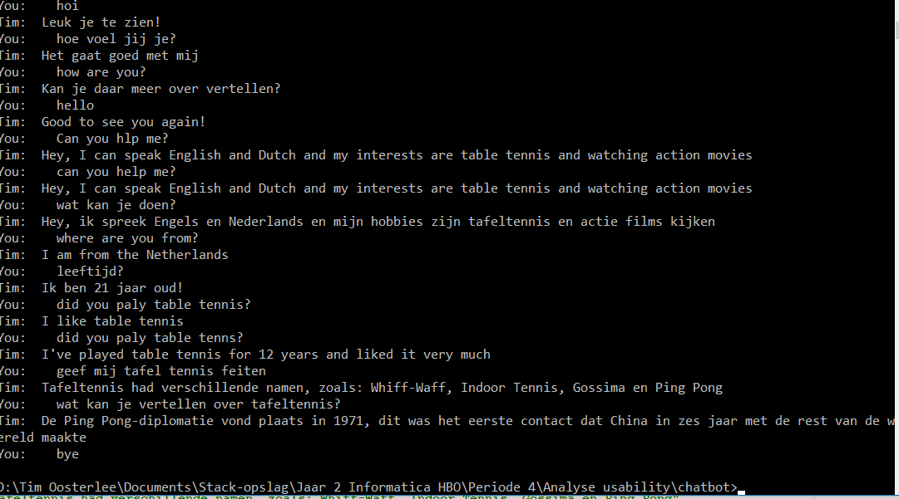
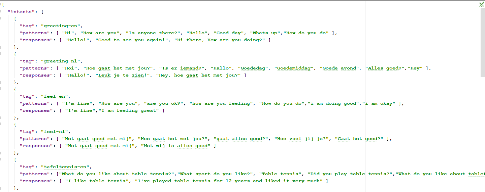
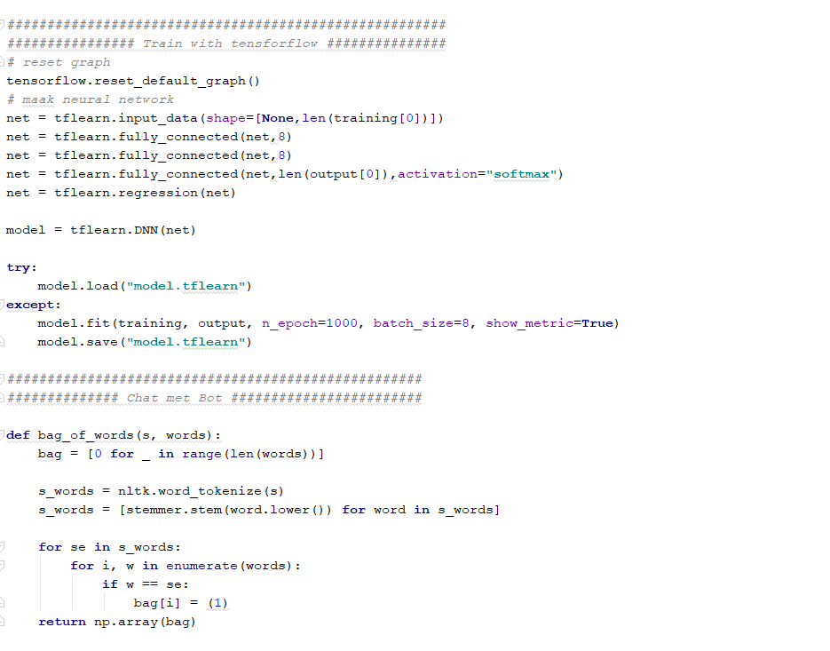
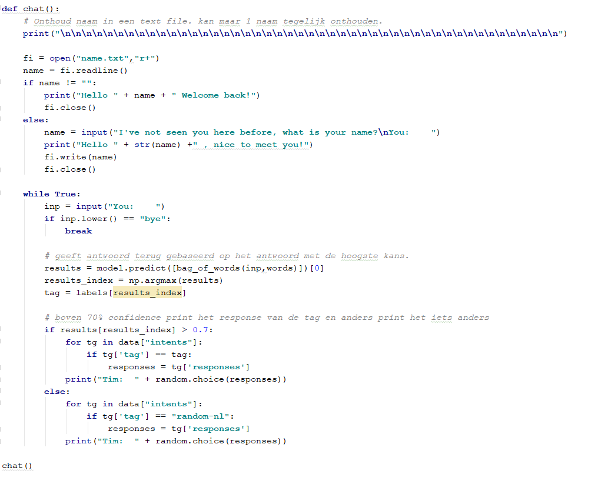

Inspiratie voor dit leerdoel
Ik wilde een chatbot maken die een gesprek kan voeren zoals een mens dat kan en makkelijk nieuwe dingen kan leren wanneer er uitbreidingen zijn. Hierdoor ben ik gekomen op een chatbot die gebruik maakt van TensorFlow en NLTK (natural language toolkit)
×

Dit is hoe het werkt
Klik op de plaatjes om ze te vergroten. En klik op het kruisje of naast de afbeelding om te sluiten
Voorbeeld

Setup
- Libraries: TensorFlow en NLTK
- Python 3.6.3
- Imports: nltk 3.4.3, tflearn 0.3.2, numpy 1.16.1, tensorflow 1.13.1, json en pickle
Stap 1 JSON bestand aanmaken

Dit JSON bestand bestaat uit verschillende intents waar de chatbot over kan praten, deze intents zijn opgedeeld uit tags, patterns en responses.
Tags zijn de overkoepelende namen om alles makkelijker op te slaan.
Patterns zijn de zinnen die de gebruiker mogelijk kan geven of een variatie daarvan (spellingsfouten zijn geen probleem bij het herkennen van deze patronen).
Als de patronen herkent worden dan wordt er uit de responses een willekeurig antwoord gekozen.
Het fijne aan dit bestand is dat het oneindig uitgebreid kan worden om zo menselijk mogelijk te lijken of voor andere doeleinden zoals een FAQ bot
Stap 2 Pre-processing
Voordat het model getraind kan worden moet uit het JSON bestand eerst de patterns ontleed worden tot de belangrijkste woorden uit de zin.
Dit gebeurt door middel van "Stemming" dit is het proces waar woorden naar hun kortste vorm worden gezet.
Bijvoorbeeld bij werkwoorden kunnen er vele vormen zijn zoals het woord game, mensen kunnen zeggen: gaming.gamed,games. Door Stemming wordt het allemaal genormaliseerd naar game dit maakt het makkelijk om het woord terug te vinden in zinnen waar woorden in verschillende vormen voorkomen.
Stap 3 Model trainen met TensorFlow

Hier gebruik ik de trainingsdata die in de vorige stap is gemaakt en met een klein neural network wordt het model gemaakt. Na 1000 keer de data hebben gelezen heeft het model ongeveer een nauwkeurigheid van 99,7%. Het trainen duurt op dit moment nog niet heel lang want het JSON bestand is nog niet heel groot.
Stap 4 Chatbot antwoord keuze

De chatbot vraagt de eerste keer dat je hem ziet om je naam en de volgende keer weet hij je naam.
Als je "bye" zegt dan stopt het gesprek om ervoor te zorgen dat er een manier is om te stoppen.
Als de gebruiker een vraag stelt dan checkt de bot voor verschillende mogelijkheden wat het onderwerp kan zijn, als het voor meer dan 70% zekerheid kan zeggen wat het onderwerp (welke tag) is dan kiest de bot de antwoorden die bij die tag horen.
Wanneer er niks te vinden is met meer dan 70% zekerheid dan haalt het de antwoorden uit een intent waar ik algemene antwoorden terug geef zoals:"Kunnen we ergens anders over praten","Sorry, mijn hobbies zijn alleen tafeltennis en actie films".
Ik ben bewust dat dit niet de beste oplossing is om een gesprek zo menselijk mogelijk te maken, maar ik wilde de gebruiker een weg wijzen wanneer de bot niet slim genoeg is om antwoorden te geven.
Reflectie
Ik heb mijn leerdoel behaald. Door dit project heb ik ervaring opgedaan met TensorFlow, NLTK en het gebruik van JSON data uitlezen. De bot zelf werkt naar mijn mening goed genoeg voor hoeveel mogelijke antwoorden het kan geven, maar het kent nog te weinig om als echt menselijk te worden ervaren door de gebruiker.
Toekomstplan
Mogelijke toekomstplannen met deze chatbot is om het te gebruiken als een FAQ bot en te plaatsen op deze website, maar op dit moment heb ik nog geen goed plan om dit te doen.